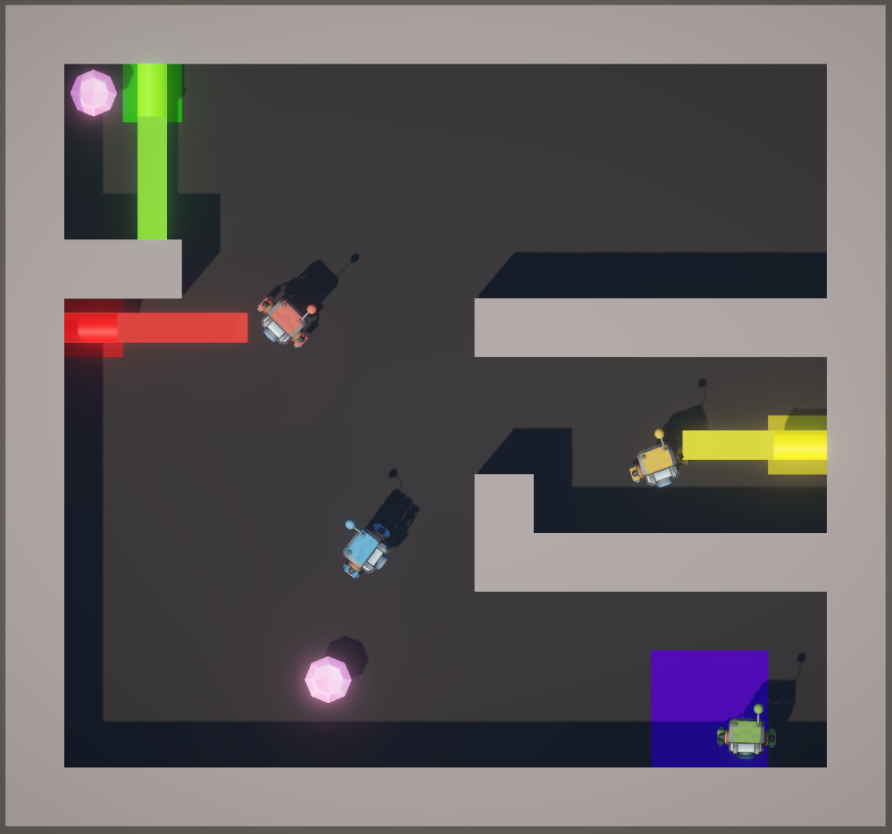

I'm a passionate fullstack developer with a deep interest in Machine Learning. I am extremely curious, so I like to explore multiple domains such as frontend technologies, database architectures, cloud, automatization, containerisation, etc.
I like to build complete projects from start to end, by testing and learning new tools, approached or languages.
When I'm not developping, I am probably enjoying and testing new things as my curiosity goes beyond my computer. I love to try and learn new things, it can be anything starting with sports like basketball, soccer or volley, passing by new languages to learn and be able to speak fluently, or totally new skills like mechanic repair or medical knowledge
Now that I completed my master, I am looking for an opportunity to develop my skills in a company.
-
If you landed on this portfolio and found it interesting, do not hesitate to contact me with an offer !
During the courses at the VUB, I chose to focus on software engineering. I took several classes like "Software engineering", "Advanced Topics in Software Engineering", "Software Architectures" or "Software Quality Analysis".
-
This helped a lot in order to improve my programming skills, especially for the infrastructure and code quality.
After my bachelor, I decided to keep studying in order to improve my skills. As the bachelor was more general, I focused on the "Software and critical systems" and the "Artifical Intellingence" aspects.
-
This was extremely helpful and greatly improved my skill thanks to diverse projects and theoretical courses. I also had the chance to make an incredibly interesting research for my Master Thesis, which targets the machine learning aspect, that can be found in the experience section.
This is where I learnt and acquired the foundation of my programming skills. It taught me all the basics, and developed them in 3 years during which I took a huge interest in Machine Learning and AI.

I'm currently open to new opportunities and collaborations.
Whether you have a job offer, a project in mind, a question, or just want to say hello my inbox is always open.
My contacts are available right under, by clicking on the icons, and you can also contact me by filling in this form.